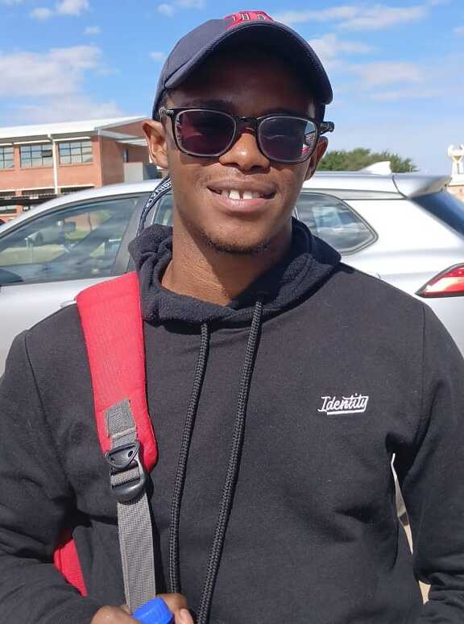

Hey there 👋, Welcome to My Profile
This is my personal profile page where I share my journey, skills, and interests in the world of technology. Feel free to explore and connect with me through my social media links.
My name is Letlhogonolo Mothoagae, I am a final year student at North West University (Mafikeng Campus) and I am currently enrolled for a BSc degree in Computer Science and Electronics.
I am passionate about Tech and all things related to tech, I seek to become a full stack developer. I also have a love for Web Development, Cyber Security, Cloud Computing and Networks.
Besides tech I also have a love for social media management and I am currently the Social Media Manager for MTR VISION 30
which is a Property management business which focuses on providing NSFAS Accreditted Student Accommodations for North West University students.
To learn more about MTR VISION 30 click here.